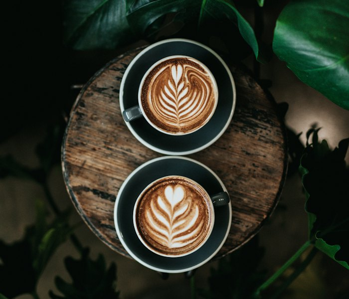
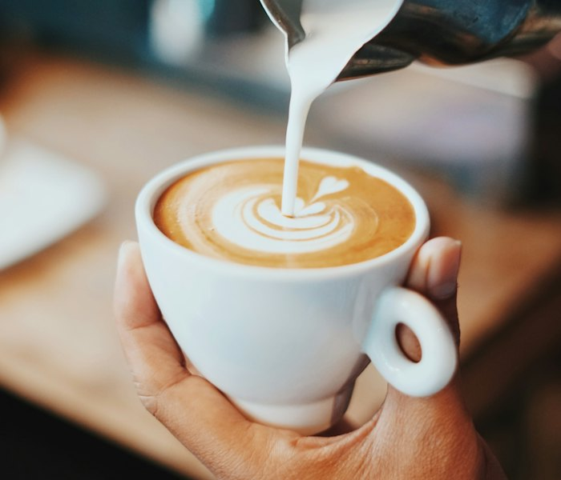

Arte latte
Técnicas de Diseño
Paso a paso para crear arte en tu taza
Principiante
Corazón
El primer diseño que aprende todo barista. Se basa en un vertido constante y un corte final al centro.
Pasos
- Preparar un espresso doble en taza precalentada.
- Texturizar la leche a 60–65 °C con microespuma fina.
- Verter desde altura hasta llenar la mitad de la taza.
- Acercar la jarra, dejar que se forme un círculo y cortar hacia adelante.

Intermedio
Tulipán
Capas de pequeños corazones apilados que forman la flor. Requiere control del flujo y pausas precisas.
Pasos
- Llenar la taza hasta la mitad con vertido alto.
- Bajar la jarra y depositar un primer círculo.
- Empujar suavemente para crear capas sucesivas.
- Terminar con un corte fino que una todas las capas.

Avanzado
Rosetta
El diseño más icónico del arte latte. Requiere control del flujo y sincronización del movimiento lateral.
Pasos
- Preparar el espresso en taza precalentada.
- Texturizar la leche a 65 °C hasta obtener microespuma sedosa.
- Verter desde el centro con movimiento lateral rítmico.
- Al llegar al borde, hacer un corte hacia adelante para formar las hojas.